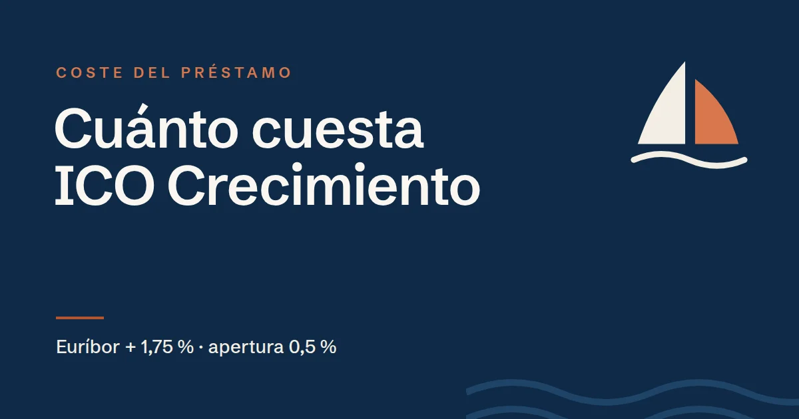

Cuánto cuesta un préstamo ICO Crecimiento: tipo, comisiones y un ejemplo completo

En resumen
El coste de ICO Crecimiento tiene pocas piezas y todas están en el reglamento de la línea:
- Tipo de interés: Euríbor a 12 meses (mínimo 0 %) + 1,75 %, que baja al 1,25 % o al 0,75 % con aval. Se revisa cada año.
- Comisión de apertura: 0,5 %, descontada del primer desembolso.
- Cancelación anticipada: 0,5 % de lo que se devuelva antes de tiempo.
- Sin comisión por la parte que no se llegue a disponer.
- Posible recargo de sostenibilidad del 0,25 % anual si no se cumple el Plan de Remediación.
Basado en el Documento de Condiciones Generales (DCG) de la línea ICO Crecimiento. Las condiciones pueden cambiar y, en caso de duda, prevalece el texto oficial: compruébalo siempre en www.ico.es.
El tipo de interés
El préstamo es a tipo variable: Euríbor a un año más un margen. Si el Euríbor fuese negativo, se toma como 0 %. El tipo se revisa una vez al año y se mantiene durante los 12 meses siguientes. El margen depende de la garantía:
| Garantía | Margen |
|---|---|
| Sin aval, o aval de menos del 50 % | 1,75 % |
| Aval del Estado o de una entidad financiera solvente entre el 50 % y el 70 % | 1,25 % |
| Aval del Estado o de una entidad financiera solvente entre el 70 % y el 90 % | 0,75 % |
| Aval del 100 % de una SGR | Según el convenio entre el ICO y esa SGR |
Cuando hay aval, a ese margen hay que sumar lo que cobra el avalista. En el caso de una SGR, sus comisiones y la aportación a su capital se pueden incluir en la propia financiación.
Cómo se devuelve
Los intereses se pagan cada mes, el día 15. Durante la carencia solo se pagan intereses. Después, el capital se devuelve, como regla general, en cuotas mensuales de capital constantes: cada mes se amortiza lo mismo y los intereses se calculan sobre lo que queda pendiente, así que la cuota total va bajando con el tiempo.
Ejemplo: 400.000 € de inversión a 10 años
Una empresa financia una inversión con 400.000 € a 10 años, con 2 de carencia y sin aval. Para el ejemplo suponemos un Euríbor constante del 2 %, es decir, un tipo del 3,75 %. En la realidad el Euríbor cambiará cada año.
- Comisión de apertura
- 2.000 € (0,5 %), que se descuentan del primer desembolso
- Años 1 y 2 (carencia)
- Solo intereses: 1.250 € al mes
- Años 3 a 10
- 4.167 € de capital al mes más intereses: la primera cuota ronda los 5.417 € y la última, unos 4.180 €
- Intereses totales
- Unos 90.600 €
- Coste financiero total
- Unos 92.600 € (intereses + apertura)
El mismo préstamo con aval del 80 %
Con un aval público o de una entidad financiera solvente que cubra el 80 %, el margen bajaría al 0,75 % y el tipo quedaría en el 2,75 %. Los intereses totales bajarían a unos 66.500 €: unos 24.000 € menos, a los que habría que restar lo que cueste el aval. Por eso conviene comparar las dos opciones con números antes de presentar la solicitud.
Otros costes posibles
- Cancelación anticipada: 0,5 % de lo que se devuelva antes de tiempo. Si el préstamo vence anticipadamente por un incumplimiento, la comisión es del 1 % del capital pendiente.
- Intereses de demora: el tipo ordinario más un 6 % sobre las cuotas que no se paguen a tiempo.
- Recargo de sostenibilidad: si la empresa saca menos de 2 puntos en el cuestionario ASG y no acredita mejoras en 24 meses, 0,25 % anual sobre el importe firmado. En este ejemplo, 1.000 € al año. Lo explicamos en la guía del cuestionario de sostenibilidad.
- Notaría: el contrato se firma en documento público.
Lo que no cuesta
- No hay comisión por la parte del préstamo que no se llegue a disponer.
- No hay que contratar seguros, tarjetas ni otros productos vinculados.
- Los gastos de consultoría para preparar la solicitud se pueden financiar dentro del propio préstamo.
Preguntas frecuentes
¿Qué tipo de interés tiene ICO Crecimiento?
Euríbor a 12 meses, con un mínimo del 0 %, más un margen del 1,75 %. El margen baja al 1,25 % o al 0,75 % si la operación lleva un aval que cubra entre el 50 % y el 70 % o entre el 70 % y el 90 %. El tipo se revisa cada año.
¿Qué comisiones tiene ICO Crecimiento?
Una comisión de apertura del 0,5 %, que se descuenta del primer desembolso, y una comisión del 0,5 % sobre lo que se cancele anticipadamente. No hay comisión por la parte que no se disponga.
¿La cuota de ICO Crecimiento es fija?
No. Pasada la carencia, el capital se devuelve en cuotas mensuales constantes y los intereses se calculan sobre lo pendiente, así que la cuota total baja con el tiempo. Además, el tipo se revisa cada año con el Euríbor.